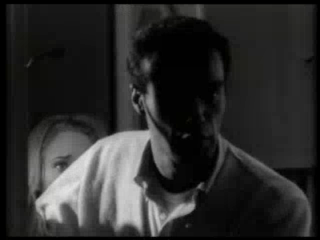
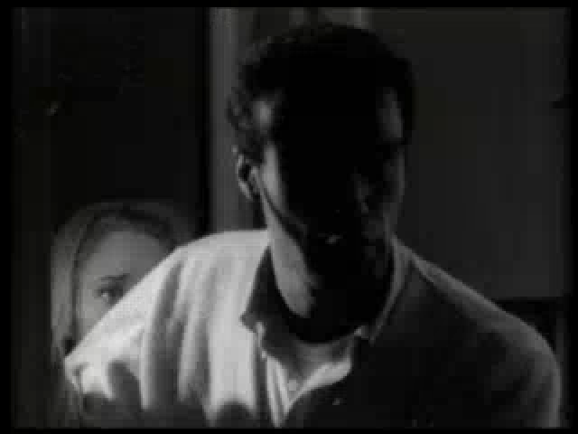
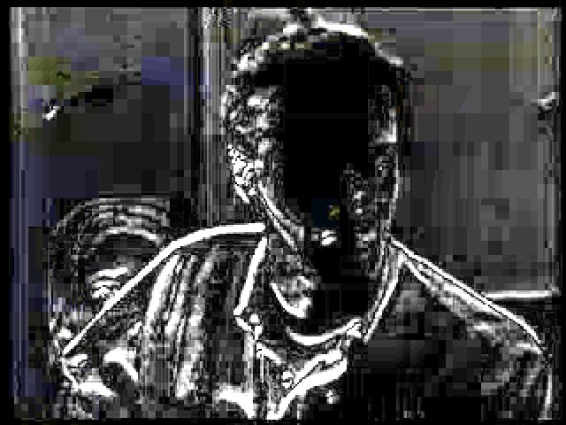

Issue #157 — after a seek, the decoder repeated the first frame
rawvideo, so ffmpeg
times their output at a constant rate, and after a seek, for many time bases, that timing
emitted the first kept frame twice. Every later frame landed one slot
late. The same decoder feeds trimmed encodes and the detectors, so:
- Preview: showed frame N−1 (the app's own Original decode showed N).
- Trimmed encodes: a trim of 41..52 came out
41, 41, 42 … 51: first frame doubled, last frame lost, picture one frame late against the audio. - Noise score: every sampled pair was one picture twice, so a source with sigma ≈ 4.5 noise scored 0.0 and Noise Reduction was never suggested.
setpts=PTS-STARTPTS at the front of a seeking decoder's one
-vf (worker/src/source_decode.rs), and stops the preview passing a
pointless -ss 0, so a window at frame 0 decodes exactly like an untrimmed encode.
Every affected source now decodes the right frames from every start
tried; untrimmed encodes are bit-identical to before.
1. The mechanism
The ffmpeg CLI picks an output timing mode from the muxer's flags. rawvideo declares
AVFMT_NOTIMESTAMPS but not AVFMT_VARIABLE_FPS, so it gets
constant-rate timing: frames are placed on a grid at the output rate, and a frame
is repeated or dropped to keep the grid filled. An image muxer (the app's JPEG Original frame)
declares both, so it gets passthrough timing. That is why the Original side was right and the
Processed side was not.
Both seeking decoders seek to (first − 0.5) / fps, half a frame before the frame
wanted, so ffmpeg's accurate seek keeps exactly that frame. Its timestamp then sits half a frame
after the output's zero. For some time bases, the constant-rate grid fills that gap by emitting
the frame twice. setpts=PTS-STARTPTS rebases the first kept frame to 0, so there is no
gap to fill.
-fps_mode passthrough would also remove the gap, but it changes what a
soft-telecine source decodes to (§5). It is the right tool only for the VFR decoder
(timeline_decoder_args, issue #137), which places stored frames in the script itself
and is untouched here.
2. Which sources were affected
8 frames decoded from source frame 40, seeking as the worker does. Each picture is named by
its index in an independent sequential decode of the same file (MD5 of the luma
plane; -fps_mode passthrough, every stored frame once, no seek). The last two columns
count, over 7–8 start frames (1, 10, 40–43, 77, near the end), how often the 8 frames were exactly
start … start+7. Script: dup_probe.py.
| Source | Time base | Before (default timing) | After (setpts) | Right, before | Right, after |
|---|---|---|---|---|---|
| Affected: fixed | |||||
small_clip.mp4 (H.264, 29.97) | 1/2997 | 40, 40, 41 … 46 | 40, 41 … 47 | 0/8 | 8/8 |
seek_timebase_2997.mov (new fixture, H.264, 29.97) | 1/11988 | 40, 40, 41 … 46 | 40, 41 … 47 | 0/8 | 8/8 |
| ProRes 422 Proxy MOV, 29.97 (variant) | 1/11988 | 40, 40, 41 … 46 | 40, 41 … 47 | 0/8 | 8/8 |
| H.264 MKV, 25 (variant) | 1/1000 | 40, 40, 41 … 46 | 40, 41 … 47 | 0/8 | 8/8 |
| Noisy ProRes HQ MOV / noisy H.264 MP4 (variants) | 1/11988, 1/2997 | 40, 40, 41 … 46 | 40, 41 … 47 | 0/8 | 8/8 |
| Unaffected: unchanged | |||||
colorize_test.mp4 (24) | 1/12288 | 40 … 47 | 40 … 47 | 8/8 | 8/8 |
face_restore_test.mp4 (29.97) | 1/30000 | 40 … 47 | 40 … 47 | 8/8 | 8/8 |
prores422_10bit_telecine.mov (30 frames) | 1/30000 | right | right | 2/2 | 2/2 |
pal-sd-25.mov | 1/25 | static colour bars: every frame identical, so this fixture can't show a shift either way | |||
| Seek lands on the wrong picture for other reasons (§6): the duplicate run is gone, the position is not fixed | |||||
pal-dvbt-fieldcoded-25i.ts | 1/90000 | 28 ×8 | 28, 29 … 35 | 0/8 | 0/8 |
| MPEG-2 PAL DVD program stream, open GOP (variant) | 1/90000 | 48 ×8 | 48, 49 … 55 | 0/8 | 1/8 |
| H.264 MPEG-TS, 25 (variant) | 1/90000 | 50 ×8 | 50, 51 … 57 | 0/8 | 0/8 |
hard_telecine_test.avi (MPEG-2 in AVI) | 1001/30000 | 38, 39 … 45 | 38, 39 … 45 | 0/8 | 0/8 |
interlaced_test.avi (Lagarith, 75 stored frames) | 1/25 | 36 … 43 | 36 … 43 | 0/7 | 1/7 |
soft_telecine_test.mkv (MPEG-2, 23.976) | 1/1000 | 40, 40, 40, 42, 42, 44, 45, 45 | 40, 40, 40, 41, 42 … 45 | 0/8 | 0/8 |
The "variant" rows are built by make_variants.py from ffmpeg's
testsrc2 (every frame differs) and are not committed. The committed
seek_timebase_2997.mov is made by
Tests/TestResources/generate_seek_timebase_test.sh; its 1/11988 timescale is the one
from a user's ProRes clip in the same forum thread. Limit: MD5 identity says
which stored picture came out, which is exact for this question, but only for decodes of the
same file; it says nothing about colour.
Not fully confirmed: the plan asked for a TS "without an audio-first gap". ffmpeg's MPEG-TS muxer adds its own 1.4 s mux delay, so the variant's video starts at 1.48 s anyway, and like the PS variant its seek lands on a later keyframe. Neither TS file isolates the duplicate from the position bug, and both are recorded as follow-up work (§6).
3. What the user saw, and what they see now
Script: worker_probe.py runs the worker itself, with every pass off. The preview of
frame N, and the app's Original (the exact arguments of PreviewGenerator.beforeFrameArgs,
to PNG), are each compared with the sequential decode's frames N−2 … N+2 by mean absolute RGB
difference; the closest is reported. A trimmed FFV1 encode of 41..52 is named frame by frame by MD5.
| Source | Preview of 10 / 41 / 60, before | after | Original | Trim 41..52, before | after |
|---|---|---|---|---|---|
small_clip.mp4 | N−1, N−1, N−1 | N, N, N | N (both) | 41, 41, 42 … 51 | 41, 42 … 52 |
seek_timebase_2997.mov | N−1, N−1, N−1 | N, N, N | N (both) | 41, 41, 42 … 51 | 41, 42 … 52 |
colorize_test.mp4 | unchanged; nearly static black-and-white, so the nearest-frame test is not decisive (neighbours within 2 levels of each other) | same as preview | 41 … 52 | 41 … 52 | |
interlaced_test.avi | unchanged; against the sequential decode it reads N−2 at 41 and 60 because of its 4 leading null frames (§6) | same as preview | 37 … 48 both (same reason) | ||
Preview against Original, before the fix: mean difference 2.7–11.5 on small_clip.mp4,
4.0–5.5 on the MOV. After: 0.00 on both.

small_clip.mp4
frame 41: the app's own decode, correct before and after. Every image here is 2× nearest-neighbour.

4. What must not change
Untrimmed encodes
An untrimmed encode does not seek, so its decoder arguments are unchanged by construction (unit
test decoders_that_do_not_seek_are_unchanged). Measured anyway: every decoded frame of an
FFV1 encode by the worker before and after (framemd5) is
identical for small_clip.mp4 (3151 frames),
seek_timebase_2997.mov (90), interlaced_test.avi with no passes (75) and with
QTGMC (150), and soft_telecine_test.mkv (120). Script: identity_probe.py.
The preview of frame 0
The preview used to pass -ss 0.000000 for a window starting at frame 0. That
is a seek: ffmpeg re-bases timestamps on the seek point and trims anything before it.
The fix passes no -ss there, like an untrimmed encode. Measured on all 13 sources
(frame0_probe.py): preview frame 0 is unchanged on 11 and changed on two,
hard_telecine_test.avi and the DVB-T .ts. On both it now
equals frame 0 of the untrimmed encode (mean difference 0.00; before 9.24 and
2.13). With setpts alone, preview frame 0 on late-starting video would have depended on the
seek; that is why the decision is "no -ss, no reset" rather than "always reset".
Telecine
telecine_probe.py, trimmed encodes of frames 10..69:
- IVTC on
hard_telecine_test.avi: 48 frames before and after, bit-identical (this source has no duplicate to remove). - No passes on
soft_telecine_test.mkv: 60 frames before and after. Before, 15 of the 60 stored film frames were missing from the output (11, 13, 16, 18, 23, …), replaced by repeats of their neighbours. After, none are missing. The first frame still comes out three times, exactly as it does at the start of an untrimmed decode (the untrimmed decode of this file is 122 slots for 120 stored frames). - Soft Telecine method, same file: 48 frames before and after; the pictures differ. That method drops 1 frame in 5 even untrimmed when the job's rate is 23.976 (25 of 120 missing). That is its own behaviour, recorded in §6, not something this fix changes.
So setpts keeps what a constant-rate decode does with pulldown. The extra repeat runs and
drops in the default column came from the seek gap, not the source.
5. The detectors
--detect-crop, --detect-noise-halo and --detect-native decode
through preview_decoder_args, so they get the fix. detector_probe.py runs the
first two with the worker before and after, and counts how many of the noise detector's 24 sampled
pairs the old decoder delivered as the same picture twice:
| Source | Pairs that were one picture twice | Noise before → after | Suggested |
|---|---|---|---|
Noisy H.264 MP4, 1/2997 (temporal noise, ffmpeg noise=alls=10) | 24/24 | 0.0 → 4.62 | no → yes |
| Noisy ProRes HQ MOV, 1/11988 (same noise) | 24/24 | 0.0 → 4.18 | no → yes |
small_clip.mp4, seek_timebase_2997.mov, clean variants | 24/24 | 0.0 → 0.0 | no → no |
pal-dvbt-fieldcoded-25i.ts | 15/24 | 0.0 → 0.0 | no → no |
interlaced_test.avi, colorize_test.mp4, face_restore_test.mp4 | 0/24 | unchanged | unchanged |
Halo scores moved by under 0.7 (none near the 6.0 threshold), and the crop report (crop, crop with bars, confidence) was identical on every source. On the affected clean sources the noise score stays 0.0 because they are compressed clean video, whose skipped blocks read noiseless anyway (as the noise report already says). Limit: the noisy sources are synthetic; the point is only that a measurable noise was read as none.
The noise report's calibration is not affected. Its fixtures
(2026-11-noise-halo-scores) are intra-frame FFV1
MKVs, which decode correctly after a seek (checked: an FFV1 MKV at 25 fps matched from every start
frame). Its reference measurement reads from frame 0 without seeking. Only its informational full-clip
worker runs on small_clip.mp4 and the DVB-T .ts read duplicated pairs, and both
score 0.0 before and after. Its thresholds stand and its scripts are unchanged.
6. Not fixed here: the seek lands on the wrong picture
Measuring against an independent decode turned up sources where the seek itself, not the timing,
lands somewhere else. Every row is the same with -fps_mode passthrough, so it is not this
bug. They are separate follow-ups:
- MPEG-PS and MPEG-TS (DVD program stream, H.264 TS, the DVB-T capture): the decode starts at a later keyframe (start 40 → 48 with a 12-frame GOP, → 50 with a 25-frame GOP). The earlier hypothesis for the DVB-T file, "video starts 1.32 s after its audio", may be part of it. This is what DVD/VOB users get, so it is the most important of the three.
- MPEG-2 in AVI (
hard_telecine_test.avi): lands 1–2 frames early (start 10 → 8, 40 → 38), and start 1 → 45. - Leading repeats in an untrimmed decode:
interlaced_test.avidecodes to 79 constant-rate slots for 75 stored frames (frame 0 four times, frame 1 twice: AVI null frames), andsoft_telecine_test.mkvto 122 slots for 120. The app's frame numbers and the encode's then disagree by those slots, and the Soft Telecine method's 1-in-5 drop depends on which rate the job carries. - Correction (review): one case this fix does change. A seek into a run of
leading null frames (
interlaced_test.avi, stored pts 0 then 5, in-points 1–4) used to be right from the first real frame on, because constant-rate timing filled the gap from the seek point; the reset rebases to the first stored frame after the gap, so the whole trim now runs up to two frames early (an in-point of 3: 4, 6, 7 … instead of 4, 4, 4, 6, 7 …; the first slot is wrong either way). This brokeintegration_frame_mapping_test.dart's "from an in-point" (in-point 3), which now starts at 6, past the gap. A seek into a mid-stream null-frame run (a dropped-frame capture) is unchanged: measured on an FFV1 AVI with frames 100–104 dropped, the old decoder and the reset give the same frames from every start 97–106 (both wrong for an in-point inside the run, 100–104). Leading null frames are task 16's.scripts/gap_probe.py.
integration_seek_alignment_test.dart covers only sources whose sequential numbering
is the app's numbering, so it does not claim these.
7. Decisions
setpts=PTS-STARTPTS, first in the one-vf: it rebases to the first frame the accurate seek kept (the seek's own trim runs before the user filter chain), and ffmpeg honours only the last-vf, so it can't be a second one. Measured against the alternative of subtracting the seek's fixed half frame (setpts=PTS-0.5/fps/TB, which would keep a gap after the seek point): it fixes the same 49 doubled starts, but in a 1/25 time base the half frame ties and rounds a frame early, and it broke seeks just before a mid-stream null-frame run that the reset handles like the old decoder.- Not
-fps_mode passthrough: same result on ordinary sources, but on soft telecine it hands over stored frames (40 … 47) instead of the constant-rate slots an untrimmed encode gets. That would make trimmed and untrimmed encodes of one source disagree. - Only when the decoder seeks: untrimmed encodes stay byte-identical, and the preview of frame 0 decodes like the encode of frame 0 (§4).
- Tested against an independent decode: preview-vs-encode tests could never see this,
because both paths shifted together. The heavy test compares the preview, the app's Original and a
trimmed encode each with
select=eq(n,N)of the source. It fails 8 of 12 cases against the worker before the fix.
8. What wasn't tested
- Windows and Linux. The duplicate comes from the ffmpeg CLI's timing logic, not from a decoder or the CPU, and every platform runs FFmpeg 9.0, so the same behaviour is expected. The heavy test runs nightly on all four.
- VFR sources: their decoder (
timeline_decoder_args) already uses passthrough timing and is unchanged. - Descale's
--detect-nativewasn't re-run: it decodes single frames, so the fix only changes which frame it measures.
9. Reproduce
cd worker && cargo build # the "after" worker # build a "before" worker from the commit before the fix, next to a deps/ directory BEFORE_WORKER=/path/to/before/vapourbox-worker \ docs/reports/issue-157-seek-alignment/scripts/run.sh
scripts/: seeklib.py (shared decode helpers), make_variants.py,
dup_probe.py (§2), worker_probe.py (§3), images.py (images 1–5),
identity_probe.py, frame0_probe.py, telecine_probe.py (§4),
detector_probe.py (§5), run.sh (all of them). Tests:
app/test/integration_seek_alignment_test.dart (heavy) and the unit tests in
worker/src/source_decode.rs.